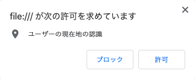

「Medic Searcher」は、近くの医療機関を診療科の種類・医療機関名から検索できます。
旅先で急な体調不良…だけど土地勘がなくて近くの病院がわからない…
そんな時に使えるのがこの「Medic Searcher」です。
「Medic Searcher」は、近くの医療機関を診療科の種類・医療機関名から検索できます。
旅先で急な体調不良…だけど土地勘がなくて近くの病院がわからない…
そんな時に使えるのがこの「Medic Searcher」です。
ユーザが検索条件を入力する部分です。
検索条件を指定した後、「近くの病院・診療所を検索」ボタンをクリックしてください。
出発地点を指定する地図です。
地図を操作することで出発地点(マーカー)を移動できます。使用できる操作は以下の通りです。
| ・クリック | : 出発地点(マーカー)をクリックした位置に移動 |
| ・ドラッグ | : 地図の表示範囲を移動 |
| ・スクロールまたは2本指でピンチ | : 拡大/縮小 |
| ・ダブルクリック | : 拡大 |
検索にヒットした医療機関への経路を地図で表示します。
到着地点には、施設名と電話番号が書かれています。
クリックすることで、より見やすくすることができます。
検索にヒットした医療施設の名前と電話番号を表示します。
検索結果が複数件ある場合、近い順に1つずつ表示されます。
「Medic Searcher」を起動すると以下のようなメッセージが表示されます。
位置情報へのアクセスは必ず許可してください。許可しないと医療機関の検索および経路検索が正しく動作しません。
このメッセージは、内部で使用しているJavaScriptの仕様上、セキュリティ保護の観点から必ず表示されるものです。 ここで取得した位置情報は、現在地をもとにした地図の作成、近くの医療機関の検索、および経路検索以外には使用しておりません。
まず、ラジオボタンで、診療科の種類で検索するのか医療機関名で検索するのかを選択してください。
セレクトボックスで探したい診療科と検索結果の最大個数を選択してください。
複数件検索した場合、施設情報の欄に表示される施設情報は、より近い医療機関が優先されます。
テキストボックスに、経路を知りたい医療機関の名前を入力してください。
!アクセス時に取得した現在地からの経路を検索する場合は、この操作は不要です
「Medic Searcher」を起動すると、自動で現在地を取得し、その点を経路検索の出発地点とします。
出発地点を変更する場合、地図を操作し出発地点とする点をクリックしてください。クリックすると、地図内のマーカーが移動します。
マーカーのある地点が、経路探索の出発地点となります。
「近くの病院・診療所を検索」ボタンをクリックしてください。
経路地図が表示されます。経路地図をクリックすると、より見やすく表示します。
また、経路地図の下に検索にヒットした医療機関の名前、電話番号が表示されます。
医療機関を検索できる範囲は、地図で指定した出発地点を中心に20km圏内です。